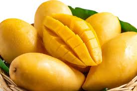
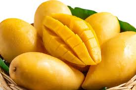

Mango fruit has been advised by both medical practioners and fitness experts as one of the most healthy fruits available in the market. Mangoes are yellow in color when ripe and our agency provides the most after-sought mango fruit available in today`s market. Here are lists of branches where our products are avalable in different cities of our country Kenya.
Mango has vast beneits health-wise which includes: Lowers cholestral, promotes clear skin, promotes healthy gut and aids in weight loss.
 
